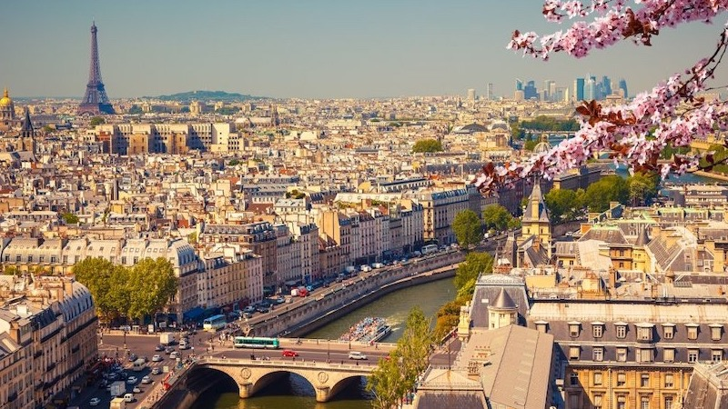
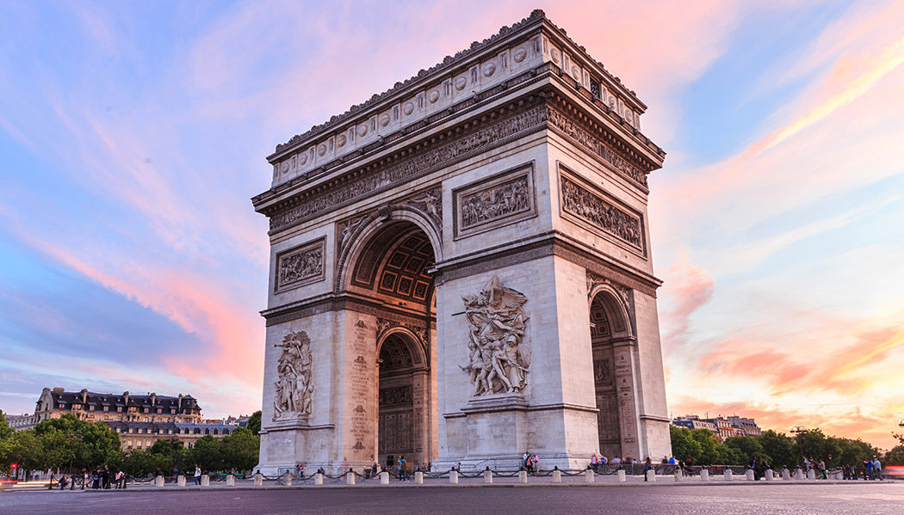

Paris
Paris, a cidade das luzes, é um destino icônico e encantador que cativa os corações de milhões de turistas todos os anos. Paris é verdadeiramente um lugar único no mundo. Vamos explorar alguns dos pontos turísticos mais famosos desta cidade mágica.
Torre Eiffel é, sem dúvida, o símbolo mais reconhecido de Paris. Esta estrutura foi construída em 1889 e serviu como um marco da Exposição Universal. Subir ao topo da Torre Eiffel proporciona uma vista panorâmica e espetacular da cidade.
Outro ponto de referência emblemático é o Museu do Louvre, que abriga uma das maiores e mais valiosas coleções de arte do mundo. Entre as suas obras-primas famosas está a Mona Lisa, de Leonardo da Vinci.
A Catedral de Notre-Dame é uma obra-prima gótica que merece uma visita. Embora tenha sido parcialmente danificada por um incêndio em 2019, ainda é possível apreciar sua grandiosidade e beleza arquitetónica.

Torre Eiffel

Restaurente de Paris

Arco do triunfo